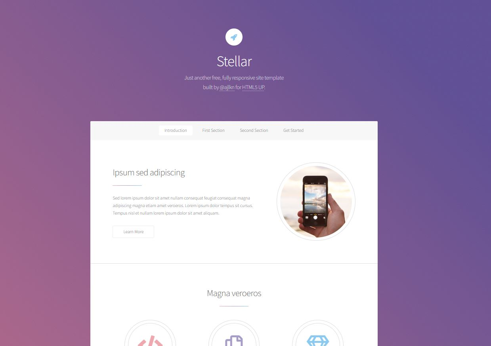
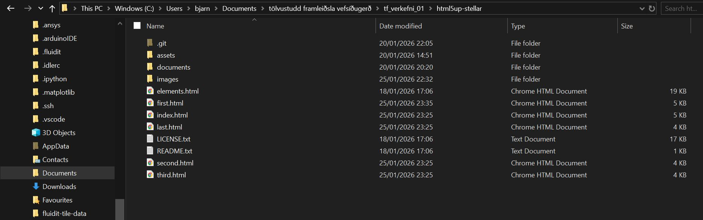

Inngangur
Til að hefja þetta verkefni þurfti ég fyrst að læra grunnatriðin um vefsíðugerð, útgáfustýringu og öll tilheyrandi. Ég hafði engu reynslu á því sviði og þurfti því að byrja á byrjunarreit. Ég byrjaði á að afla mér upplýsingar um það hvernig Github virkar og grunnatriðin í html kóðun í skoða í hvaða röð væri best að vinna þetta. Eftir það dróg ég þá ályktun að besti væri bara að hefjast handa. Fyrsta skref að var að sækja sér innblástur og velja síðan sniðmát frá HTML UP.
Innblástur og sniðmát
Ég skoðaði aðeins vefsíður frá gömlum nemendum og fékk þar aðeins hugmynd um það hvernig sniðmát er best að hafa. Ég vildi hafa sniðmátið mjög intúitívt og minimalískt, þ.a. maður gæti bara rennt í gegnum síðuna og fengið allar nauðsynlegar upplýsingar, engir flipar fyrir undirsíður. yfirkaflar sem þarf á vefsíðinu vildi. Það fór mikill tími í að skoða sniðmát. Ég var meira að leita eftir réttri virkni frekar en lita- eða leturvali, því ég vissi að það væri talsvert minna mál að breyta því. Ég endaði á að velja Stellar sniðmátið því mér fannst flott hvernig maður flæðir í gegnum hana en hefur alltaf smá efnisyfirlit sem fylgir manni í gegn. 
Útgáfustýring og skipulag
Útgáfustýringin með Github var eitt af því sem ég vissi ekkert um. Ég tók langt spjall við gervigreindina og hló svo niður Git í tölvuna og stofnaði aðgang inn á Github . Það sem mér fannst flókið var að fatta hvernig ég ætti að vista hlutina í tölvunni svo allt virkaði, hvaða möppur ættu að fara hvert o.fl. Þar var ég t.d. næstum búinn að vista þetta allt í OneDrive sem er alls ekki mælt með. En ég fann að lokum út úr því og hvernig mappan á að líta út svo allt tali saman. 
Forritun og myndvinnsla
Ég notaði Pheonix Code editor sem hefur tekið við af Brackets. Það er gríðarlega öflugt tól því maður getur séð samstundis hvernig breytingarnar í kóðanum sjást á vefsíðunni sem gerir manni mjög auðvelt fyrir. Það eru ekki margar myndir sem ég er að nota fyrir vefsíðuna, þ.a. að ég miða við að halda þeim undir 200 KB. Ef að ég fer að sjá að vefsíðan er orðin eitthvað hægari, mun ég kannski þurfa nota myndvinnslu forrit til að halda þeim minni.
Litir og útlit
Sniðmátið notar bleikt og fjólubláan sem er flott, en ég er að leita að einhverju aðeins öflugra, trausvekjandi og karlmennslegra. Ég endaði á því að velja dökkbláan sem lýsist aðeins eftir því sem maður fer niður vefsíðuna. Einnig breytti ég hvernig myndirnar fyrir undirsíðurnar birtast. Ég vildi hafa þeir þ.a. þær skiptast á að vera hægra og vinstra megin til að fá meira líf í vefsíðuna.
Önnur forrit
Þegar ég lendi í vandræðum með kóðann notaði ég Claude til að vinna úr þeim